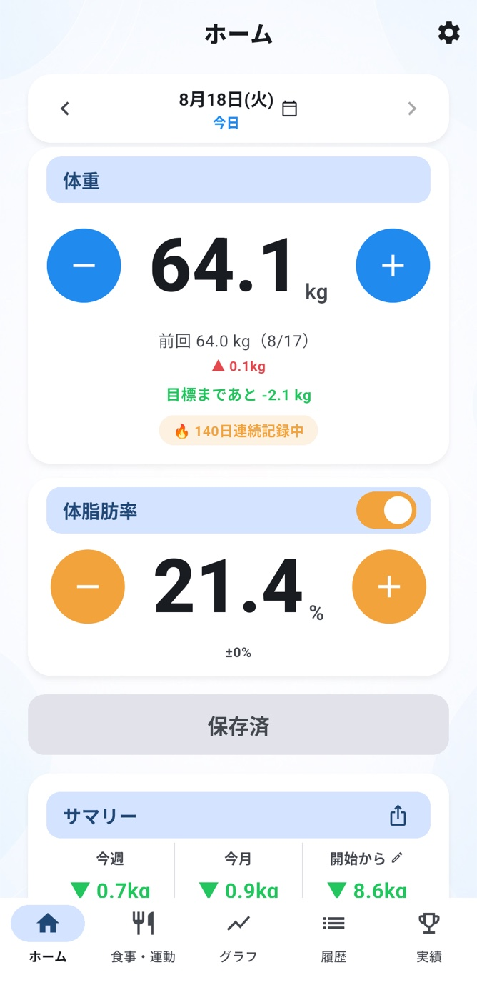
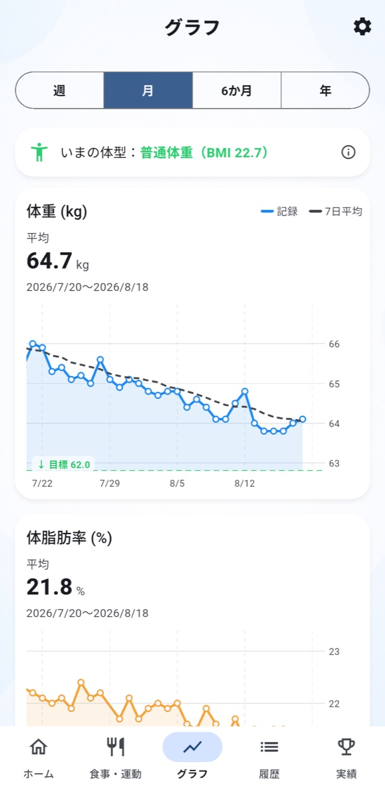
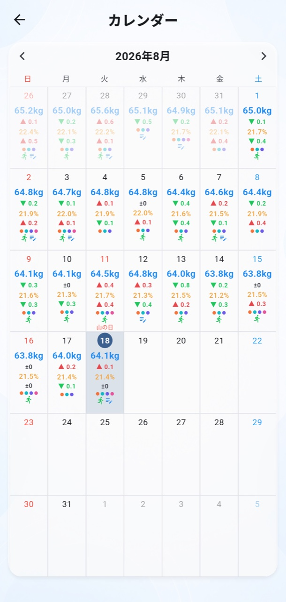
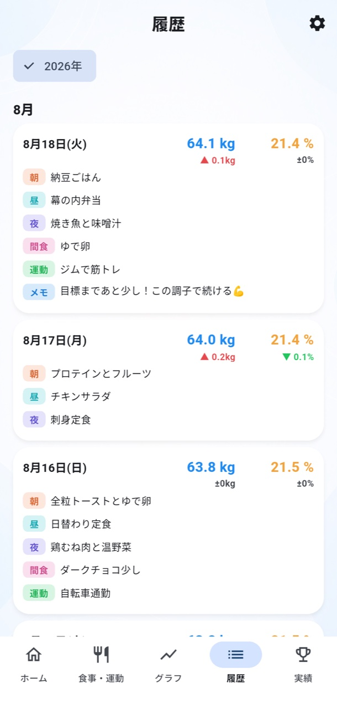
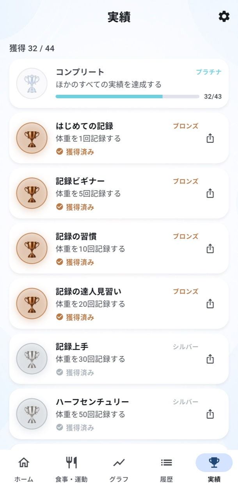
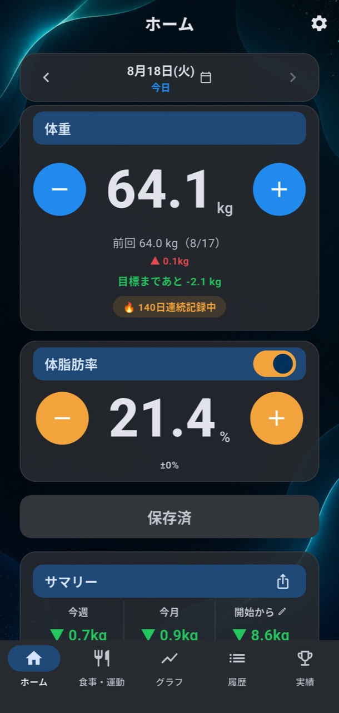
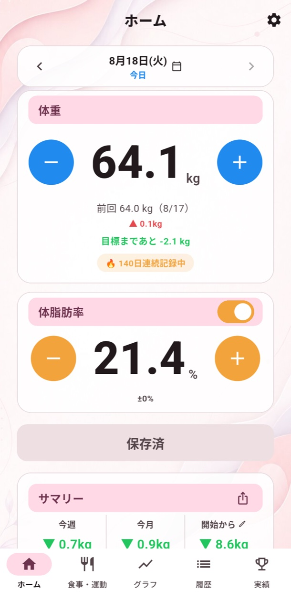
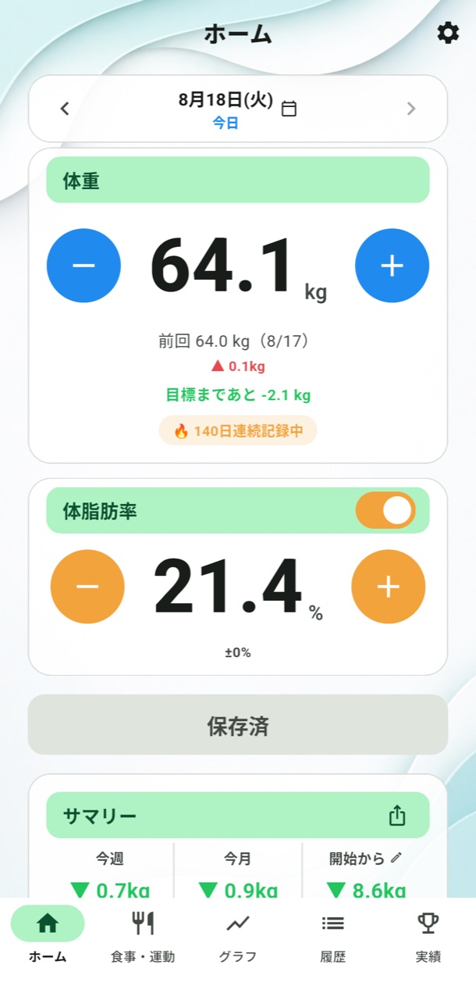
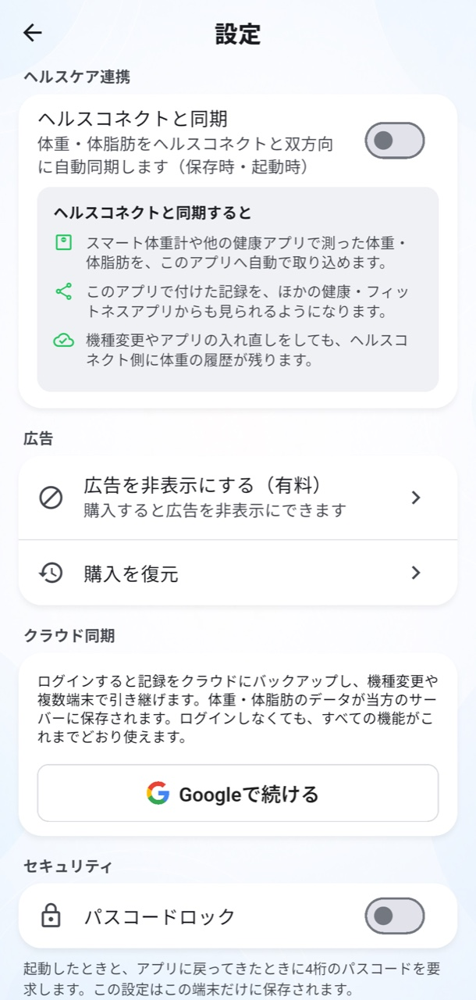

ヘルスケアと双方向同期
Appleヘルスケア／ヘルスコネクトから体重・体脂肪率を取り込み、アプリの記録も書き出せます。
ダイエットを、がんばりすぎない。
＋と−を、ぽちぽちするだけ。
今日の数字をひとつ残したら、それで100点。
ゆるく続けるうちに、変化がちゃんと見えてくる。

FOR YOUR ROUTINE
ダイエットに、カロリー計算もむずかしい分析も必須ではありません。
量る、残す、振り返る。その小さな習慣を気持ちよく続けるためのアプリです。
RECORD
体重と体脂肪率を、ホーム画面からすぐに記録。前回との差、目標までの距離、今週・今月の変化も自動でまとまります。
GRAPH
体重・体脂肪率・BMIの推移を、見やすいグラフで。週・月・6か月・年を切り替え、7日平均と目標ラインで長い目の変化をつかめます。

CALENDAR & HISTORY
カレンダーで1か月の体重と増減を俯瞰。履歴では、朝・昼・夜・間食のメモや運動、ひとこと日記まで、その日の記録をまとめて振り返れます。


A LITTLE MOTIVATION
記録回数、連続記録、食事や運動のメモ、目標への一歩。続けるほどブロンズ、シルバー、ゴールドのトロフィーが集まります。

MAKE IT YOURS
背景128枚、テーマカラー14色、アプリアイコン36種類。
自分の写真を背景にすることもできます。




YOUR DATA, YOURS
Appleヘルスケア／ヘルスコネクトから体重・体脂肪率を取り込み、アプリの記録も書き出せます。
任意のログインでクラウド同期。ファイルへのバックアップと復元にも対応しています。
パスコードと生体認証で、アプリ全体をロックできます。
AND MORE
好きな時刻にやさしくお知らせ。記録が空いたときの通知も設定できます。
アプリを開く前に、今日の記録や変化をホーム画面から確認できます。
体重そのものを隠し、増減や達成状況だけを選んで共有できます。
1年の記録日数、変化、実績を振り返る自分だけのまとめを作れます。
FAQ
はじめる前に気になることを、まとめました。
いいえ。ログインなしで、すべての基本機能をそのまま使えます。クラウド同期や機種変更時の引き継ぎを使いたい場合だけ、任意でログインしてください。
無料でダウンロードして、体重記録・グラフ・カレンダー・実績などの機能を利用できます。画面下部にバナー広告が表示され、必要な方は買い切りで非表示にできます。
体脂肪率を体重と一緒に記録できます。BMIは身長と体重から自動で計算され、グラフでも変化を確認できます。
スマート体重計の記録がAppleヘルスケアまたはヘルスコネクトに保存されていれば、連携して体重・体脂肪率を取り込めます。
ログインしてクラウド同期を使うか、バックアップファイルを書き出して復元することで引き継げます。ログインは機種変更のときだけでも利用できます。
4桁のパスコードと、端末が対応している場合は生体認証でアプリをロックできます。
START TODAY
量るだけから始める、やさしい体重管理。